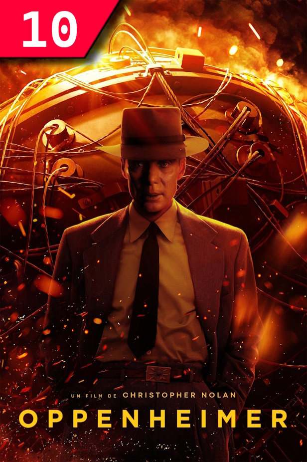

Oppenheimer (2023) HD

En 1942, convaincus que l’Allemagne nazie est en train de développer une arme nucléaire, les États-Unis initient, dans le plus grand secret, le "Projet Manhattan" destiné à mettre au point la première bombe atomique de l’histoire. Pour piloter ce dispositif, le gouvernement engage J. Robert Oppenheimer, brillant physicien, qui sera bientôt surnommé "le père de la bombe atomique". C’est dans le laboratoire ultra-secret de Los Alamos, au cœur du désert du Nouveau-Mexique, que le scientifique et son équipe mettent au point une arme révolutionnaire dont les conséquences, vertigineuses, continuent de peser sur le monde actuel…